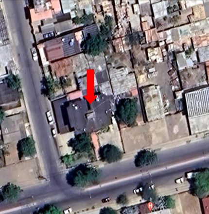

República Bolivariana de Venezuela
Ministerio del Poder Popular para la Educación Universitaria, Ciencia y Tecnología
Universidad Politécnica Territorial de Falcón “Alonso Gamero”
Programa Nacional de Formación en Informática
Unidad curricular: Proyecto Sociotecnológico · Trayecto IV
Auditoría del Sistema
de Gestión de Almacén
para el almacén de la Constructora Falconiana de Viviendas, “Compañía Anónima” (CONFALVI, C.A.)
Santa Ana de Coro · 2026
Descripción
del Escenario
Historia de la comunidad
1991
Tiene sus orígenes en el Instituto de la Vivienda del Estado Falcón (INSVIFAL), organismo público creado mediante ley estatal el 24 de diciembre.
2009
El 20 de julio se formaliza la reestructuración que transforma a INSVIFAL en la empresa pública CONFALVI, C.A.
Aspectos
- Socio-Productivo
- Económico
- Demográfico
- Político
- Ambiental
- Cultural
Fundamentación Legal
La Constitución de la República Bolivariana de Venezuela
Ley del Régimen de Propiedad de las Viviendas de la Gran Misión Vivienda Venezuela
Ubicación Geográfica y Política
- Norte
- Cjón. Ampies
- Sur
- Av. Ruiz Pineda
- Este
- Calle Federación
- Oeste
- Calle 39 A Silva
Ubicación de CONFALVI
assets/img/ubicacion.png

Contexto real de la situación problematizadora
Descripción de problemas
y necesidades
Jerarquización y selección
-
1
Inoperatividad por falta de despliegue e instalación del sistema de control
-
2
Vulnerabilidades de seguridad y debilidades de codificación del software
-
3
Dependencia de procesos manuales y obsolescencia en el registro de bienes
-
4
Necesidad de una auditoría de sistemas basada en estándares internacionales
Realización de la auditoría
Se aborda el problema seleccionado: la necesidad de una auditoría de sistemas basada en estándares internacionales.
Propósito general y específicos
General
Implementar una auditoría informática al sistema de gestión de bienes de CONFALVI, C.A., bajo los estándares ISO/IEC 27005 y OWASP Top 10 (2025).
- 1
Diagnosticar la situación actual y las fallas del sistema de gestión de almacén.
- 2
Planificar la auditoría técnica con el marco de la norma ISO/IEC 27005.
- 3
Ejecutar pruebas de seguridad técnica y funcional para detectar vulnerabilidades.
- 4
Sistematizar los hallazgos en un informe con conclusiones y recomendaciones.
Estándares y normativas legales
CRBV (1999)
Artículo 110
Plan de la Patria 2025-2031
2.ª Transformación
LOCTI (2005)
Artículo 19
Ley contra los Delitos Informáticos (2001)
Artículo 11
Estándares
ISO/IEC 27005
ISO 31000
ISO 19011
ISO/IEC 27001:2022
ISO 26514
OWASP Top 10 · 2025
Beneficiarios
Impacto
Social
Más transparencia y confianza en el almacén.
Económico
Menos pérdidas y costos operativos.
Tecnológico
Modernización de los sistemas.
Socio productivo
Más eficiencia y mejores decisiones.
Viabilidad
Económica
Equipos existentes y herramientas gratuitas.
Ambiental
Informe digital: menos uso de papel.
Política
Respaldada por el marco legal venezolano.
Social
Corrige fallos y vulnerabilidades del sistema.
Sustentos ontológicos, epistemológicos y metodológicos
Barad (2021)
Realidad construida
Nace de las prácticas del personal y los flujos de materiales.
Operativa · Social · Digital
Problemática
Controles inoperantes y retroceso al registro manual.
Robalino, Yanza y Montoya (2022)
Propósito
Auditoría informática bajo ISO/IEC 27005 y OWASP Top 10 (2025).
Vera y Jara (2018)
Paradigma sociocrítico
Forni (2022)
Enfoque cualitativo
Bernal (2010)
Método IAP
Fase Inicial o de Contacto
Fase Intermedia o de Elaboración del Plan de Acción
Fase de Ejecución y Evaluación
Credibilidad
Fiabilidad
Zapata y Rondán (2020)
- Observación participativa
- Entrevista no estructurada
- Análisis documental
- Registro fotográfico y digital
- Bitácora de campo y auditoría
- Reuniones y charlas informativas con el personal
- Retroalimentación
- Entrega formal del informe a la directiva
Méndez (2008)
Plan de acción
Fases de la metodología IAP (Bernal, 2010)
Fases de la auditoría (Robalino et al., 2022)
Actividades
Fase inicial o de contacto
Planificación
- Abordaje en la Oficina de Obras.
- Entrevistas al personal administrativo y de almacén.
- Inspección técnica del entorno tecnológico.
Fase intermedia o de elaboración del plan de acción
Planificación
- Mesas de trabajo: alcance y objetivos de la auditoría.
- Marco de riesgos: ISO/IEC 27005 e ISO 31000.
- Plan de auditoría e instrumentos de recolección.
Fase de ejecución y evaluación
Ejecución
- Pruebas de penetración y análisis dinámico (OWASP Top 10).
- Auditoría del código fuente (inyección SQL, XSS).
- Controles de acceso, sesiones y autenticación.
- Usabilidad y respuesta funcional del sistema.
Fase de ejecución y evaluación
Comunicación de resultados
- Informe técnico final con recomendaciones y dictamen.
- Socialización y entrega formal a la directiva de CONFALVI.
Actividades de socialización
Reuniones y charlas informativas con el personal administrativo, de almacén y operadores del sistema (Méndez, 2008).
Sistematización de la acción reflexión transformadora
Ejecución de actividades · BuildSafe System, CONFALVI, C.A.
Puesta en práctica de todo lo planificado en el plan de acción: se relata, de forma cronológica, cómo el equipo investigador desarrolló cada etapa del proceso auditor junto a la comunidad de CONFALVI, C.A.
-
1
21 de marzo de 2026
Diagnosticar
Entrevistas y observación en la Oficina de Obras: sistema sin instalar y registros manuales.
-
2
28 de mayo y 5 de junio
Planificar
Mesas de trabajo: alcance de 27 archivos PHP, marco ISO/IEC 27005 y OWASP Top 10 (2025).
-
3
Desde el 1 de julio
Ejecutar
Pruebas con OWASP ZAP, sqlmap y Lighthouse: 27 hallazgos (2 críticos) y riesgo 7.0/10 (Alto).
-
4
Octubre de 2026
Sistematizar
Informe revisado el 20 de octubre: no apto para producción. Entrega formal a la directiva.
Estadísticas de la auditoría
Por severidad
27
hallazgos
Riesgo global
7.0 /10 · ALTO
Por categoría OWASP Top 10 (2025)
Hallazgos críticos y altos
Credenciales de correo en el código
La contraseña de aplicación de Gmail está escrita en el código fuente y da control total sobre la cuenta de correo.
enviar_token.php · líneas 37-38
Antes
$mail->Username = 'uptag2026@gmail.com';
$mail->Password = '••••••••••••';Después
$mail->Username = getenv('MAIL_USER');
$mail->Password = getenv('MAIL_PASS');Modo debug SMTP activo
PHPMailer imprime la sesión SMTP completa en la respuesta HTTP, con las credenciales en base64 visibles al usuario.
enviar_token.php · línea 41
Antes
$mail->SMTPDebug = 3;Después
$mail->SMTPDebug = 0;
// sin salida de debug en
// producciónSin protección CSRF
Ningún formulario usa token CSRF: una página externa puede ejecutar acciones del administrador autenticado.
Todos los formularios POST
Antes
<form action="/add_user.php" method="POST">
<input name="rol" value="1">
</form>
<script>forms[0].submit()</script>Después
<input type="hidden" name="csrf_token"
value="<?= $_SESSION['csrf_token'] ?>">
if (!hash_equals($_SESSION['csrf_token'],
$_POST['csrf_token'] ?? '')) die();Hallazgos medios
Sin regeneración del ID de sesión
Tras autenticarse no se invoca session_regenerate_id(true): un atacante puede fijar el ID de sesión (Session Fixation).
index.php · líneas 88-116
Antes
if (password_verify($password, $hash)) {
// FALTA: session_regenerate_id(true);
$_SESSION['user'] = $user['name'];Después
if (password_verify($password, $hash)) {
session_regenerate_id(true);
$_SESSION['user'] = $user['name'];Sin límite de intentos en la recuperación
El envío de token no limita la frecuencia: se pueden mandar miles de correos y saturar o bloquear la cuenta SMTP.
enviar_token.php · inicio del archivo
Antes
for ($i = 0; $i < 1000; $i++) {
// POST /enviar_token.php
// email=victima@empresa.com
}Después
SELECT token_expiracion FROM user
WHERE gmail = ? AND token_expiracion
> NOW() - INTERVAL 15 MINUTE;
if (num_rows > 0) { exit(); }Conclusiones
Situación actual
Base funcional sólida, pero con Riesgo Alto (7.0/10).
2 vulnerabilidades críticas
Credenciales de correo en el código y modo de depuración SMTP activo. No Apto para Producción.
5 hallazgos altos
Acciones por GET, sin protección CSRF, SQL sin sentencias preparadas, test2.sql público y rol sin validar.
Impacto académico y social
Saberes del PNFI aplicados a un problema real del sector socio-productivo.
La innovación es lo que distingue a los líderes de los seguidores
— Steve Jobs